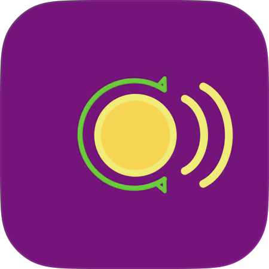

Sequencial NFC is an iPhone app for writing NDEF NFC tags with an internet address that can contain a counter. This counter will be automatically incremented between writes.
This is useful when you use NFC tags to organize items. The author uses it to organize his pepper plants in combination with the seedsio platform.
You need NDEF NFC tags that are compatible with your iPhone. The ones I bought were called Round Rewritable NFC 215 Cards and work great and are in weatherproof PVC plastic.
Click on this link. Alternatively go the the App Store on your iPhone and search for sequential nfc. It will show the app, probably below another advertised app. Install it like any other app.
Click on the Setup icon at the bottom of the app. You can have multiple patterns. The app comes installed with two patterns by default: SeedsIO User and SeedsIO.
SeedsIO installs an URI that points to the plant for the user you are logged in with on the SeedsIO platform. This means these URI's probably only work for yourself.
SeedsIO User installs an URI that points to the plant for the username you configure. This means the URI works for everybody.
You can easily copy a pattern to make a new one for any other website or platform.
Edit the User name, index and pattern and see in the green Calculated URI field what the result will be. If the result is not a valid URI, this field will turn to red.
Switch back to the Read/Write tab by pressing the button at the bottom.
Press the Write button. Hold the tag near the iPhone, the NFC is located near the cameras at the back of the phone. If things go well you should get a message telling you the tag is written. The index will also have autoincremented to the next value. This means you can immediately press Write again and write the next tag.
Sometimes writing will fail. This will be indicated in the message and sometimes also a second error message shows up. This is normal and you just need to press the Write button again and try again. After some time you get the hang of it and most of the time you can just write tags fine.